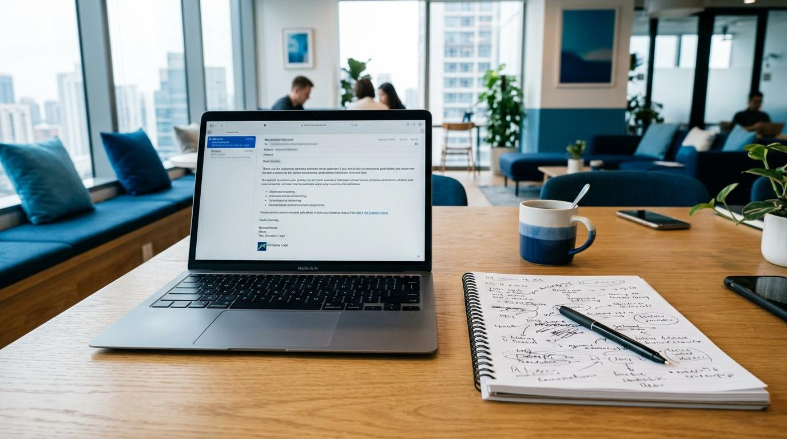

Redactar un email profesional en inglés puede llevar 20 minutos. Encontrar el tono correcto para un socio europeo, un coordinador de proyecto o una autoridad portuaria cuesta tiempo y energía. Antigravity lo hace en segundos — y tú solo revisas y envías.
Paso 1: Dale contexto y pide el borrador
Cuanto más contexto le des (quién eres, a quién escribes, qué quieres), mejor será el email.
Paso 2: Ajusta el tono si no es el correcto
Si el tono es demasiado formal, informal, largo o corto, dilo. Un ajuste cuesta 10 segundos.
Paso 3: Responde emails complicados
Lo más útil: cuando recibes un email complejo y no sabes cómo responder, deja que Antigravity te proponga opciones.
Fórmula para emails perfectos
1. Contexto — Quién soy, a quién escribo, relación (nuevo contacto / colega / jefe)
2. Objetivo — Qué quiero conseguir con este email (informar, pedir, disculpar, proponer)
3. Tono — Formal / cordial / cercano / firme / diplomático
4. Restricciones — Idioma, longitud máxima, formato (puntos, párrafos, tabla)
Más ejemplos para PLOCAN
Primer contacto
"Redacta un email de presentación a un posible socio alemán para un proyecto Horizon. Somos PLOCAN, plataforma oceánica en Canarias."
Seguimiento
"Necesito hacer follow-up de un email que envié hace 2 semanas sin respuesta. Tono educado pero directo."
Agradecimiento
"Email de agradecimiento al equipo del proyecto tras finalizar un milestone importante."
Reclamación
"Email al proveedor de instrumentación marina por retraso en la entrega. Tono firme, citando el contrato."
Advertencia
NUNCA envíes un email generado por IA sin leerlo. Revisa especialmente: nombres, fechas, cifras y compromisos. La IA puede inventar detalles que suenen correctos pero no lo sean.